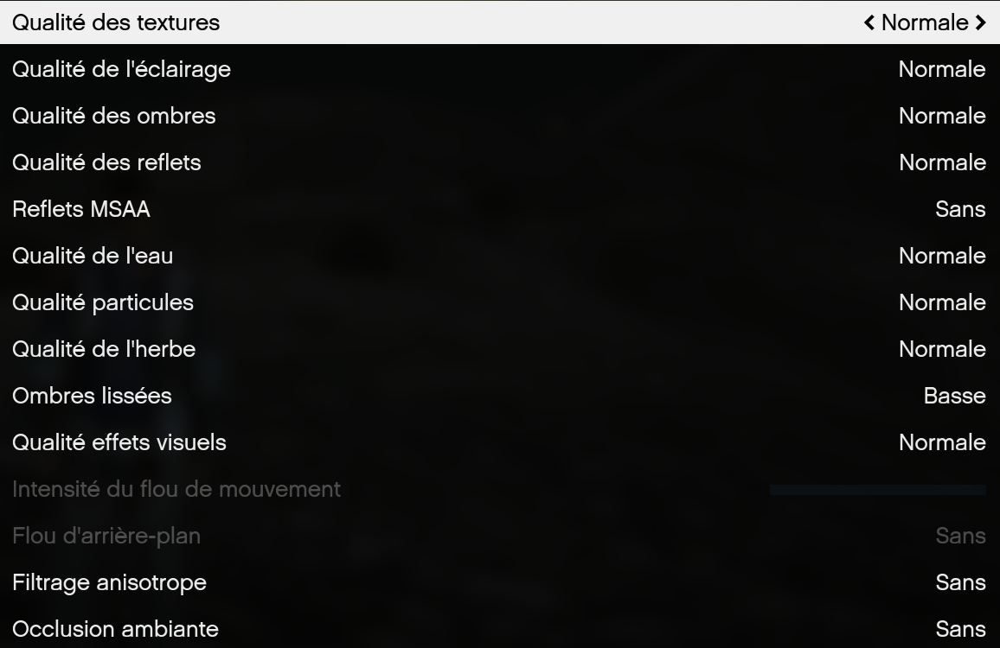

Résoudre les textures manquantes, pertes de FPS et passages sous la map.
1️⃣ Ajuster l’Extended Texture Budget
Le Extended Texture Budget est une option clé dans les paramètres graphiques de FiveM.
Une mauvaise configuration peut entraîner des problèmes d’affichage.
Comment vérifier et ajuster cette option :
- Allez dans les paramètres graphiques de votre jeu.
- Trouvez l’option « Extended Texture Budget ».
- Assurez-vous que le curseur reste dans la zone verte.
-
Rouge ou orange = PC surchargé.
- Ajustez progressivement selon les performances.
Exemple de réglage recommandé
2️⃣ Optimisez vos paramètres graphiques
Certains paramètres graphiques peuvent être trop élevés et nuire aux performances.
- Diminuez la distance d’affichage
- Évitez les détails très élevés
- Adaptez selon votre configuration

Paramètres graphiques optimisés
3️⃣ Préserver le jeu de base
- Privilégiez le jeu de base
- Les packs de textures peuvent :
- Créer des bugs
- Réduire les performances
- Être incompatibles avec certains serveurs
4️⃣ Ne pas vider le cache inutilement
Le re-téléchargement des ressources peut aggraver
les bugs de textures sur les petites configurations.
💡 Conseil : privilégiez la stabilité plutôt que les réglages extrêmes